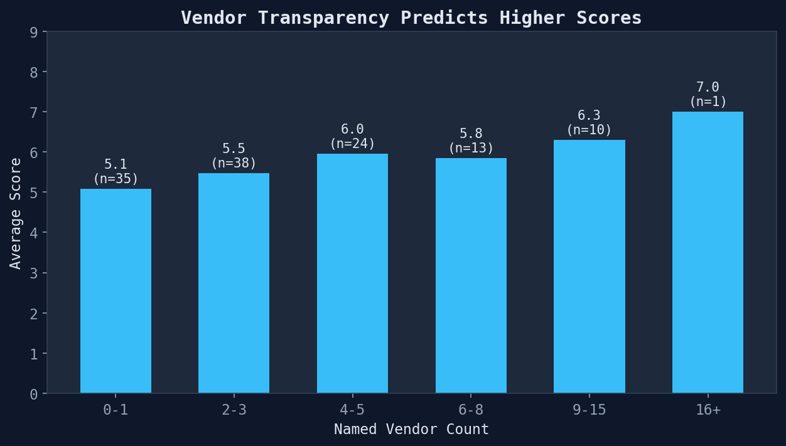
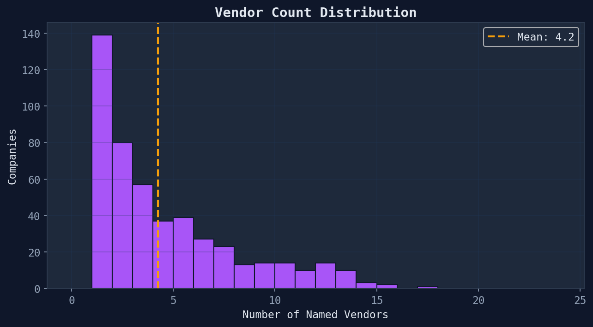

Delve Tech Due Diligence · Meta-Analysis
Vendor Ecosystem
Who powers these companies — and what vendor transparency reveals
533
Unique Vendors
4.2
Avg Vendors/Company
5.1/10
Score (0-1 vendors)
6.1/10
Score (5+ vendors)
Vendor Landscape
Across 485 companies, we identified 533 unique technology vendors. The average company names 4.2 vendors in their compliance report.

| Rank | Vendor | Companies | % of Portfolio |
|---|---|---|---|
| 1 | Amazon Web Services (AWS) | 246 | 50.7% |
| 2 | Supabase | 88 | 18.1% |
| 3 | Vercel | 82 | 16.9% |
| 4 | Google Cloud Platform (GCP) | 77 | 15.9% |
| 5 | AWS | 72 | 14.8% |
| 6 | subservice organization | 53 | 10.9% |
| 7 | OpenAI | 49 | 10.1% |
| 8 | Cloudflare | 47 | 9.7% |
| 9 | GitHub | 45 | 9.3% |
| 10 | Microsoft Azure | 39 | 8.0% |
Transparency = Maturity
A striking pattern: companies that name more vendors in their SOC 2 reports score significantly higher. This isn't because more vendors = better architecture. It's because transparency about dependencies is a proxy for engineering culture maturity.

Companies with 0-1 named vendors average 5.1/10. Companies with 5+ vendors average 6.1/10. The difference is nearly a full point — meaningful in a tight distribution.
Distribution

Due diligence signal: If a SOC 2 report names only the cloud provider and nothing else, that's a transparency red flag. Ask the founder to disclose the full vendor stack.
Generated from vendor ecosystem module · 485 SOC 2 compliance reports · 2026-03-24